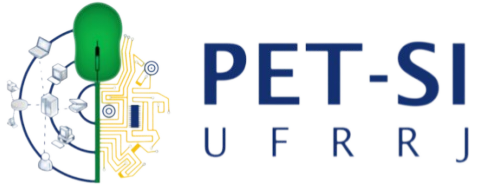
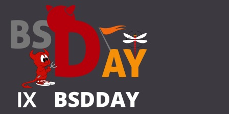
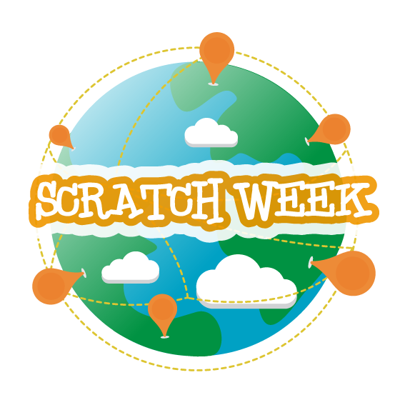
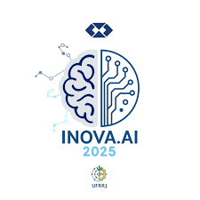
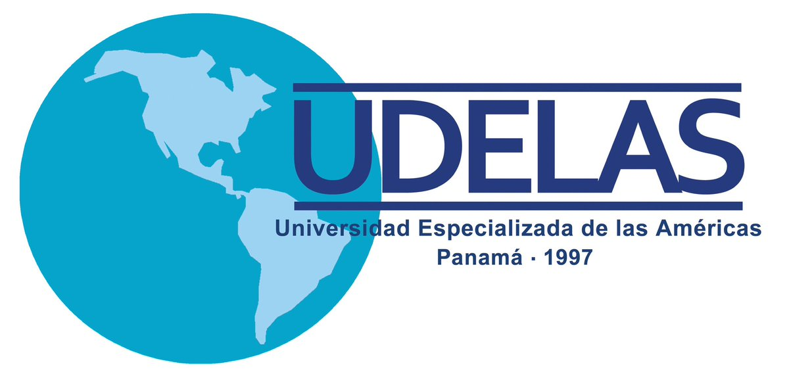

PET-SI 10 Anos - Ontem, Hoje e Amanhã
PET SI Projeto guarda-chuva alinhado ao PPC de Sistemas de Informação que visa criar um pôster comemorativo dos 10 anos do PET-SI da UFRRJ e realizar lives, mesas-redondas e encontros híbridos com egressos e profissionais, destacando suas trajetórias e experiências ao longo da história do programa.
Participar Saber maisBSDDAY em Seropédica – Divulgação em mídias digitais

BSDAY Evento sobre software livre que reúne profissionais, professores e alunos de TI dedicados a usar, manter e desenvolver programas, promovendo sua universalização.
Participar Saber maisIX BSDDay em Seropédica
BSDAy Evento sobre software livre que reúne profissionais, professores e alunos de TI dedicados a usar, manter e desenvolver programas, promovendo sua universalização.
Participar Saber maisMOSTRA SNCT 2024: Monitoramento de sensores em ambientes agrícolas usando celular, através de protocolo Bluetooth

Mostra snct 2024 O monitoramento de sensores em ambientes agrários já é uma prática consolidada, e este trabalho foca em sensores de umidade e temperatura do ar, além de umidade e temperatura do solo.
Participar Saber maisX BSDDay em Seropédica

BSDAY Evento BSDDAY em Seropédica voltado ao software livre, reunindo profissionais, professores e alunos de TI dedicados a usar, manter e desenvolver programas para ampliar sua utilização.
Participar Saber maisVozes que Inspiram – Women Tech Day
Vozes que inspiram O Vozes que Inspiram – Women Tech Day é um evento do programa Meninas Digitais da SBC que busca aproximar meninas e jovens da computação e tecnologia de forma acolhedora, inspiradora e transformadora.
Participar Saber maisSemana Rural - Minicurso: Dominando o Linux

Minicurso dominando linux Ensinar os princípios básicos do sistema facilita a adaptação do usuário e reduz a frustração na transição de um sistema proprietário para um sistema livre.
Participar Saber maisLógica e Criatividade: Programação Desplugada com o Scracth na Semana Rural - 2025
Logica e criatividade Uma oficina divertida e interativa em que os participantes aprendem programação de forma lúdica, sem usar telas.
Participar Saber maisMontagem de Impressora 3D: Aprenda Fazendo Semana Rural 2025
Imperssora3d A oficina Montagem de Impressora 3D: Aprenda Fazendo oferece uma experiência prática para capacitar os participantes na montagem de uma impressora 3D.
Participar Saber maisProjeto de Extensão Tecnológica + Inovação e Cultura Digital Inclusiva
Projeto de extesao Projeto da UFRRJ com o Instituto Casa do Pai que promove inclusão digital e capacitação em tecnologias como TICs, IA, robótica e mídias sociais para preparar jovens e adultos para o mercado.
Participar Saber maisSemana de Integração do Curso de Graduação em Sistemas de Informação
O projeto promove uma série de eventos para ajudar os novos discentes a se integrarem à rotina universitária.
Participar Saber maisEvento Virtual: Conversatório Latino-americano de Turismo: “Turismo com Propósito: Conversações para um Futuro Sustentável”
Evento virtual Conversatório que reúne docentes latino-americanos para discutir turismo sustentável, derivado do XVIII Congresso Latino-americano e do Caribe de Extensão Universitária 2025.
Participar Saber maisSobre o Projeto
O Conecta Rural é um projeto desenvolvido para facilitar o acesso da comunidade ruralina às
informações sobre as atividades de extensão oferecidas pela Universidade Federal Rural do Rio de Janeiro.
A proposta é centralizar, organizar e apresentar essas ações de maneira clara e acessível,
permitindo que estudantes, moradores e visitantes encontrem rapidamente cursos, oficinas,
eventos culturais, projetos sociais e outras iniciativas acadêmicas.
Este trabalho foi criado com foco em acessibilidade, simplicidade e utilidade pública,
reforçando o papel social da universidade e aproximando a comunidade das oportunidades de
aprendizagem e participação. O objetivo é democratizar o acesso às informações e fortalecer
os laços entre a UFRRJ e a população que a cerca.